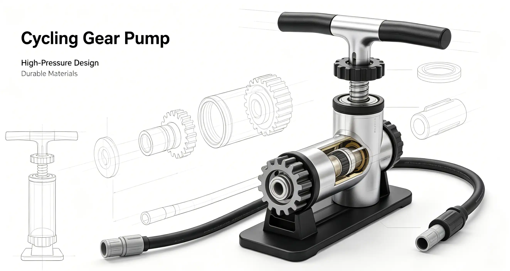

Your feet are the only contact point that transfers power to the pedals, yet many cyclists spend more time choosing bar tape than selecting shoes. The decision between clipless and flat pedals is not just about performance—it is about safety, comfort, and how you want to experience riding. If you are a new cyclist intimidated by the idea of being "locked in" to the bike, or a seasoned rider wondering if flats might actually serve you better for certain types of riding, this guide will walk you through every consideration: pedal systems, shoe types, fit, cleat setup, and the real-world trade-offs that matter.
How Clipless Pedals Actually Work: The Mechanics
Despite the name, "clipless" pedals use a cleat that bolts to the bottom of a cycling shoe and snaps into a spring-loaded mechanism on the pedal. They are called clipless because they replaced toe clips and straps. The cleat engages with a "click" and releases by twisting the heel outward. The two dominant standards are Shimano's SPD (two-bolt, recessed cleat) and SPD-SL (three-bolt, protruding cleat). SPD uses a small metal cleat (about 4mm thick) that sits recessed in the shoe tread, making it walkable—the standard for mountain biking, gravel, commuting, and indoor cycling. SPD-SL uses a larger plastic cleat with three mounting points, and the cleat protrudes from the sole, making walking awkward—the standard for road cycling. Look Keo is the competing three-bolt system, compatible with Shimano SPD-SL shoes but not pedals (the cleats are different). Speedplay, now owned by Wahoo, uses a unique lollipop-shaped pedal with a circular cleat that offers dual-sided entry and 15 degrees of float, but costs $149-$449 for the pedal system alone. Time ATAC uses a two-bolt system similar to SPD but with a different engagement feel and more float (13 or 17 degrees).
Flat Pedals: Not Just for Beginners
Modern flat pedals paired with sticky-soled shoes offer surprising performance. The key is the combination of a large platform pedal with adjustable metal pins and a shoe with a soft rubber compound. Five Ten's Stealth rubber (now owned by Adidas) is the benchmark: the Five Ten Freerider Pro ($150) uses Stealth S1 rubber that grips pins like glue. The Race Face Chester pedal ($54) uses a nylon composite body with eight replaceable steel pins per side and a large 110mm x 101mm platform. The weight is 360 grams per pair. For riders who want the ultimate flat pedal experience, the Crankbrothers Stamp 7 ($169) uses a concave aluminum body with 10 adjustable pins per side and comes in two sizes (small for shoe sizes 5-10, large for 10+). The advantage of flats is freedom: you can dab a foot instantly, adjust foot position on long rides, and walk normally off the bike. The disadvantage is a slight loss of pedaling efficiency—you cannot pull up on the backstroke—and the risk of shin strikes if your foot slips off the pedal. However, studies by the University of Utah's Department of Mechanical Engineering (2019) found that the efficiency difference between clipless and flats is only 2-4% at submaximal efforts, mostly from the upstroke contribution.
Cycling Shoe Fit: The Most Important Factor
A cycling shoe that does not fit properly will cause hot spots, numbness, and misery on any ride over 30 miles. Unlike running shoes, cycling shoes should have a snug fit through the heel and midfoot with enough room in the toe box to wiggle your toes. Cycling shoes do not "break in" the way leather shoes do—the stiff soles and synthetic uppers retain their shape. Key measurements: standing foot length (in centimeters), foot width (narrow, standard, wide), and arch height. Most brands have a consistent last shape. Shimano shoes run narrow; Sidi and Lake offer wide options. Bont shoes are heat-moldable and have a uniquely wide toe box. Sidi shoes use a replaceable heel pad system and are known for durability. Key fit rules: when standing, your longest toe should be 5-8mm from the end of the shoe. When seated with the shoe on, your heel should not lift when you flex your foot. The Boa dial system (used by Specialized, Shimano, and many others) offers micro-adjustable tension; ratchet straps are less expensive but less precise.
Pedal System Comparison Table
| System | Cleat Type | Float | Walkability | Entry Price | Best For | Example |
|---|---|---|---|---|---|---|
| Shimano SPD | 2-bolt metal | 4-6° (SM-SH56) | Excellent | $50 (PD-M520) | MTB, gravel, commuting, touring | Shimano PD-M520 + XC3 shoe |
| Shimano SPD-SL | 3-bolt plastic | 0-6° (yellow cleat) | Poor | $70 (PD-RS500) | Road racing, fast group rides | Shimano PD-RS500 + RC3 shoe |
| Look Keo | 3-bolt plastic | 0-9° (grey cleat) | Poor | $65 (Keo Classic) | Road cycling | Look Keo Classic + Sidi Genius |
| Wahoo Speedplay | 4-bolt circular | 0-15° (adjustable) | Poor | $149 (Comp) | Road, knee issues | Speedplay Comp + Bont Riot |
| Time ATAC | 2-bolt brass | 13-17° | Good | $85 (ATAC MX4) | MTB, gravel, knee relief | Time ATAC MX4 + Lake MX176 |
| Flat Pedals | None | Unlimited | Excellent | $50-$170 | MTB, commuting, casual | Race Face Chester + Five Ten Freerider |
My Clipless Learning Curve (and the Fall That Taught Me Humility)
I bought my first pair of clipless pedals—Shimano PD-M520 SPDs—and a pair of Shimano ME3 shoes for $150 total in the spring of 2016. I was 28 years old, confident, and convinced I would master the system in ten minutes. I spent 45 minutes practicing in a parking lot, clipping in and out, and felt ready. The next day, I rode to a busy coffee shop, came to a complete stop, and forgot to unclip. I tipped over in slow motion in front of about 20 people on a patio. My ego was more bruised than my hip. That fall taught me something important: clipless pedals require muscle memory, and muscle memory takes time. For the first month, I kept the tension on my pedals set to the loosest setting and unclipped 50 feet before every stop. By month three, clipping in and out was automatic. Now, after eight years of riding clipless on road and gravel, I also keep a pair of Race Face Chester flat pedals and Five Ten Freerider shoes on my mountain bike—and I am faster on technical descents with flats than I ever was clipped in. The right system depends entirely on context.
Who This Is For (And Who It's Not)
Best for SPD (two-bolt): Beginners transitioning to clipless, commuters, gravel riders, bike tourers, mountain bikers, and anyone who wants to walk normally when off the bike. The recessed cleat and double-sided pedal entry make SPD the most forgiving system.
Not ideal for SPD: Road racers who want the widest platform for maximum power transfer and the lightest weight. SPD-SL and Look Keo pedals have a wider cleat-to-pedal interface that reduces hot spots on very long rides.
Best for SPD-SL / Look Keo: Road cyclists who ride 50+ miles regularly, racers who want the stiffest possible connection, and anyone who prioritizes weight savings and aerodynamics.
Not ideal for SPD-SL / Look Keo: Commuters, anyone who needs to walk more than 50 feet, and beginners who are not yet comfortable with the clip-in motion. The protruding cleat makes walking awkward and wears the cleat quickly.
Best for flat pedals: Mountain bikers riding technical terrain, commuters in heavy traffic, winter riders who want to wear insulated boots, and anyone with knee issues who needs unlimited foot rotation.